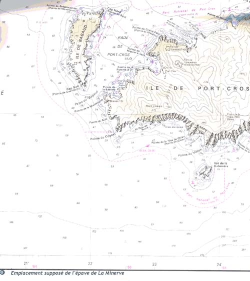

|
Recherche en radiesthésie concernant
l'épave du sous marin "La Minerve" |
|||
|
Préambule Cette page
présente le travail de recherche de Monsieur François
de La Clergerie, spécialiste en radiesthésie et président
de L'Association Radiesthésie Archéologique du Périgord. L'auteur de souhaitant pas que les questions techniques concernant ses recherches et la radiesthésie soit exposées dans les forums, il propose que les personnes voulant savoir comment cela fonctionne, le contacte directement à l'adresse ci-dessus. |
|||
|
 |
|||
|
Les recherches L'épave du sous marin LA MINERVE se situerait en bas à gauche du plan juste à la limite, en dessous de l'Île de PORT CROS et PORQUEROLLES. Nous l'avons trouvé, grâce à la radiation des corps humains dans le navire. La profondeur serait serait de 2.7O0, mètres, l'épave, couchée sur tribord, serait en trois morceaux mais dans le même prolongement. Nous y retrouvons la radiation des matières suivantes : or, acier, ce qui ne laisse aucun doute sur la nature de l'épave. Cette carte indique l'endroit présumé du Naufrage de
la MINERVE et c'est à partir de la que j'ai fait mes recherches, en
agrandissant ce plan. J'ai cherché tout d'abord la forme de l'épave
en privilégiant l'acier. Cela m'a permis de trouver tout d'abord les
deux premières coupures ou il n'y avait plus de trace d'acier. J'ai
ensuite continué mes recherches et j' ai trouvé la troisième
partie. Une fois le bateau reconstitué tel qu'il doit être au fond de
la mer, j'ai cherché ce qu'il y avait dedans avec des objets témoins
: osssements pour les corps humains, or pour les alliances,... Ensuite,
je me suis mis à rechercher de nombreux éléments : cuir, argent, plomb
(batteries), bronze (hélices) mais je ne sais pas s'il y en a une ou
deux, aluminium (cuisine) cuivre pour les fils, laitons (dynamos), -
verre, etc… Ceci vous donne, à titre indicatif la marche de mon travail
de recherche. F. de La Clergerie |
|||
|
|
|||
|